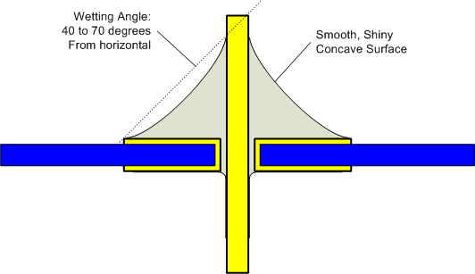
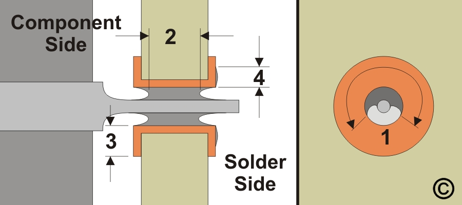
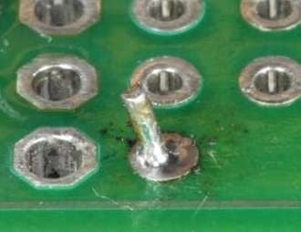

Joint Quality
How to tell a good joint from a bad one — and why lead-free joints look different.
Wetting Angle
The angle where solder meets the pad surface. Single most important visual indicator.
| Angle | Rating | What It Looks Like |
|---|---|---|
| < 30° | Excellent | Solder spreads broadly, strong concave fillet |
| 30-70° | Good | Acceptable for most applications |
| < 90° | IPC minimum | Concave fillet, adequate IMC formation |
| > 90° | DEFECT | Solder balls up, convex, poor/no bond |
cos(θ) = (γSV - γSL) / γLV — relates contact angle to surface energies of the solid/liquid/vapor interfaces.
Good Joint Characteristics
- Smooth, concave fillet — "volcano" shape with concave sides
- Solder feathers smoothly onto the pad
- Wetting angle below 90° (ideally < 30°)
- No voids, pinholes, or cracks
Figure: Good vs bad solder joints — labeled comparison

Figure: Solder joint formation close-up

Matte, satin, or slightly grainy finish is completely normal for lead-free solder. IPC-A-610 explicitly states this. Do not reject or rework good joints because they aren't shiny.
Figure: Through-hole joint cross-section — what IPC measures

Common Defects
Cold Joint
Looks like: Dull, grainy, rough, crystalline. Convex/bulbous shape.
Cause: Insufficient heat (joint never reached ~240°C), or movement during solidification.
Fix: Reheat with flux. If the joint was disturbed, remove solder and redo.
Photo: Cold solder joints

Excess Solder
Looks like: Large blob extending beyond normal boundary.
Problem: Can't verify wetting. Masks defects. Risk of bridging.
Starved Joint
Looks like: Concave with exposed base metal. Skeletal.
Problem: Mechanically weak. Will crack under stress.
Photo: Solder-starved joints

Solder Bridge
Looks like: Solder connecting two adjacent pads.
Problem: Short circuit. Fix with flux + solder wick, or drag with clean tip.
Photo: Solder bridges

Tombstoning
Looks like: SMD component stands up vertically on one end.
Cause: Uneven heating — one pad reflows before the other. Surface tension pulls component vertical.
Disturbed Joint
Looks like: Rough, frosted surface with ripple pattern.
Cause: Movement while solder was solidifying. Don't bump the board.
IPC-A-610 Three-Class System
| Class 1 | Class 2 | Class 3 | |
|---|---|---|---|
| Name | General Electronics | Dedicated Service | High-Performance |
| Examples | Consumer gadgets | Industrial, telecom | Aerospace, military, medical |
| Inspection | — | 3-10X magnification | 10-30X magnification |
Through-Hole Fill Requirements
| Criteria | Class 1 | Class 2 | Class 3 |
|---|---|---|---|
| Barrel fill (single-sided) | — | 50% | 75% |
| Barrel fill (double-sided) | — | 75% | 100% |
| Land coverage (solder side) | 75% | 75% | 75% |
SMD Fillet Requirements
IPC-A-610 defines three fillets on every SMD joint. All three must meet the class requirements:
| Fillet | Where | Class 1 | Class 2 | Class 3 |
|---|---|---|---|---|
| Heel | Where the lead bends away from the board | Wetting | Fillet required | Fillet required |
| Toe | End of the lead, furthest from the component body | Wetting | Wetting | Fillet required |
| Side | Along the sides of the lead | Wetting | Wetting | Fillet required, ≥75% lead height |
For chip components (resistors, capacitors), the terminology changes to end and side fillets. The key measurement is solder height relative to the metallized termination — Class 3 requires the fillet to extend at least 75% of the termination height.
Inspecting Joints You Can't See
Through-hole and leaded SMD joints are visible — you can check wetting, fillet shape, and bridges by eye. But QFN, BGA, and other bottom-termination packages hide their joints underneath. Different inspection strategy required.
QFN / DFN / LGA
Pads are under the chip. No leads extend past the package edge. This is the most common "how do I know it worked?" problem.
What You Can See
- Side fillet (toe fillet) — on most QFN packages, the pad extends slightly beyond the package edge. A small solder fillet should be visible at this edge. If you see a concave meniscus wetting up from the pad toward the package, the joint is likely good.
- No fillet visible — doesn't necessarily mean failure. Some QFN packages have pads that don't extend beyond the edge. But if the pad does extend and there's no wetting: suspect an open.
- Solder balls around the package — voiding or outgassing from the thermal pad. The joint may still be functional but has voids underneath.
What You Can't See (But Can Test)
| Method | What It Tells You | Equipment |
|---|---|---|
| Continuity / resistance | Whether each signal pad is connected. Compare resistance to a known-good board if possible. | Multimeter |
| Thermal pad continuity | The center ground/thermal pad should have low resistance to ground. An open thermal pad means poor heat dissipation — the IC may work but run hot and fail early. | Multimeter |
| Gentle push test | A properly reflowed QFN resists lateral force and springs back slightly. An unreflowed QFN slides or lifts easily. | Finger or probe |
| Thermal imaging | After powering the board, an IC with open thermal pad runs significantly hotter than one properly soldered. A $200 thermal camera or a $15 IR thermometer can catch this. | IR camera / thermometer |
| X-ray | The gold standard. Shows voids, bridges, open connections, and solder coverage under the package. | X-ray system (production) |
A QFN can pass all electrical tests and still have a failed thermal pad. The signal pads around the perimeter carry data — the center pad carries heat. A chip with an open thermal pad works fine on the bench but throttles or fails under load because it can't dissipate power. Always check thermal pad continuity to ground, and if possible, verify with thermal imaging under load.
BGA
Hundreds of solder balls under an opaque package. Visual inspection is essentially impossible. The joints are formed, hidden, and must be verified indirectly.
Indicators During Reflow
- The settle — when all balls melt simultaneously, the package drops ~0.1mm as balls collapse from spheres to truncated shapes. Watch for this during hot air rework. If you don't see the settle, not all balls have reflowed.
- Self-alignment — a slightly misaligned BGA will visibly shift into position as surface tension centers the package. This is a strong indicator that the joints are properly wetted.
- Flux outgassing stops — bubbling flux around the package edges stops when reflow is complete and solder has sealed the joints.
Post-Reflow Verification
| Method | What It Catches | Limitation |
|---|---|---|
| Continuity on key nets | Open connections (unballed pads, cold joints) | Only tests the nets you check. Doesn't catch partial wetting or voids. |
| Functional test | Gross failures — device works or doesn't | Marginal joints (partial wetting, high-resistance) may pass functional test but fail in the field. |
| Gentle push/shear test | Completely unreflowed BGA (slides freely). Properly reflowed BGA is firmly bonded. | Can't distinguish a well-reflowed BGA from one with 50% open connections — surface tension on the reflowed balls holds it in place. |
| X-ray inspection | Everything — voids, bridges, head-in-pillow, open balls, misalignment | Requires X-ray equipment. The definitive test. |
| Dye-and-pry (destructive) | Definitive bond quality — shows exactly which balls wetted | Destroys the assembly. Used for process validation, not production. |
A BGA-specific defect where the ball on the component and the paste on the pad both melt but don't merge. The ball sits in the paste like a head in a pillow — contact but no metallurgical bond. Causes:
- Package warpage during reflow — the ball lifts off the paste at peak temperature, then settles back as the board cools
- Oxidized ball surface — the oxide skin prevents coalescence even though both are liquid
- Insufficient flux activity to break through the oxide on the ball
Head-in-pillow is invisible from the outside, passes push tests (the ball is physically seated in solidified paste), and often passes electrical tests (contact resistance is low enough). It fails under thermal cycling or vibration when the non-bonded interface separates. X-ray can sometimes detect it as a faint outline at the ball-paste interface.
When Visual Inspection Isn't Enough
For through-hole and leaded SMD, visual inspection catches >95% of defects. For bottom-termination packages, rely on:
- Process control — a validated reflow profile that you know produces good joints on this board. The best inspection is not needing to inspect.
- Electrical test — continuity, resistance, and functional test catch most failures.
- Thermal verification — catches open thermal pads that electrical tests miss.
- X-ray — when you need certainty. If you're doing production BGA rework, access to an X-ray is not optional.
Dwell Time
| Method | Time | Source |
|---|---|---|
| Hand soldering (industry) | 2-5 seconds | IPC-aligned |
| Hand soldering (NASA) | 3-5 seconds max | NASA high-reliability |
| Solder bath immersion | ≤5 seconds | NASA-STD-8739.3 |
Higher temperature → shorter dwell. Lower → longer. But never exceed 5 seconds for hand soldering. If it's not done, you need more heat, not more time.